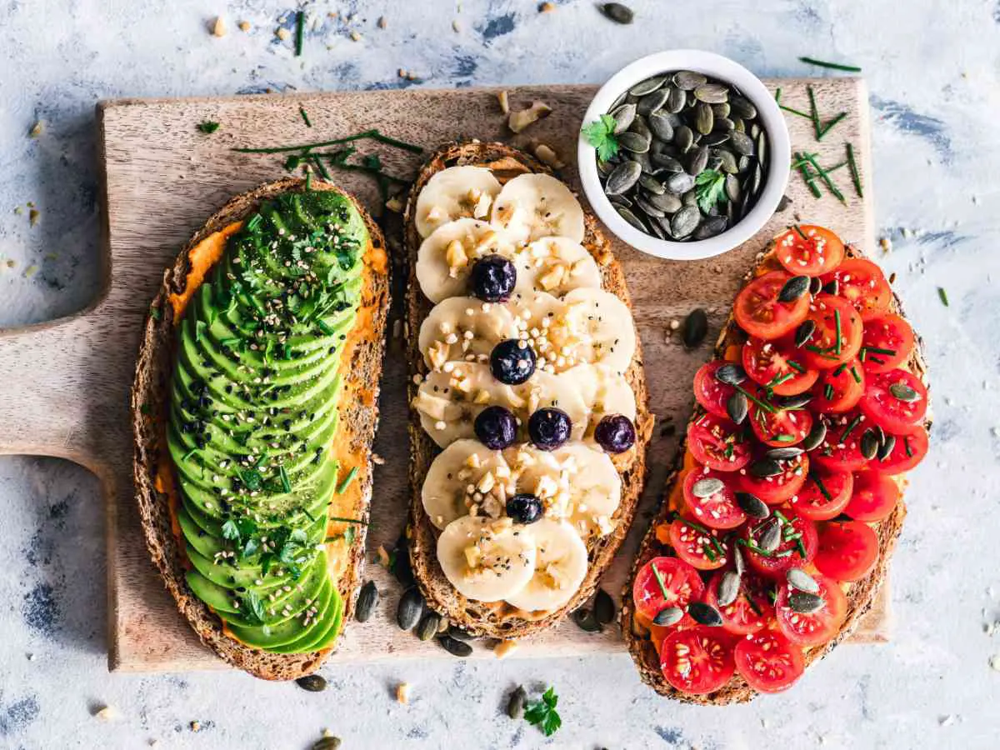

Pourquoi devient-on végétarien ? Les gens deviennent végétariens pour de nombreuses raisons, y compris la santé et le bien-être [1], les convictions religieuses, les raisons éthiques, les préoccupations concernant le bien-être animal (maladie de la vache folle [2], etc.) ou l'utilisation d'antibiotiques et d'hormones dans l’élevage, ou le simple désir de manger de manière à éviter une utilisation excessive des ressources environnementales.
En dehors de ces tendances, certaines personnes suivent un régime végétarien essentiellement parce qu'elles n'ont pas les moyens ou accès facilité à une consommation de viande, de poisson et de tous les autres aliments issus de l’élevage et de l’agriculture moderne. Comparé à il y a quelques décennies, devenir végétarien aujourd’hui est devenu plus attrayant et accessible, grâce à la disponibilité de produits frais tout au long de l'année, aux options de restauration plus végétariennes et à l'influence culinaire croissante des cultures avec des régimes principalement à base de plantes.
Différence entre régime végétarien et végétalien
Pourquoi être végétarien est mauvais pour la santé ?
Est-il dangereux d'être végétarien ?
Jusqu’à récemment, être végétarien passait parfois pour être un comportement farfelu qui peut dérégler l’organisme, et la recherche sur le végétarisme se concentrait principalement sur les carences nutritionnelles potentielles (apports en acides aminés, vitamines [3], minéraux, etc.).
Mais ces dernières années, le végétarisme a basculé vers des études qui confirment certains bienfaits pour la santé d'une alimentation sans viande et plus axée sur les végétaux.
Le végétarisme ou comment être végétarien ?
Un régime végétarien équilibré sur le plan nutritionnel
De nos jours, l'alimentation à base de plantes est reconnue non seulement comme étant suffisante sur le plan nutritionnel, mais aussi comme un moyen de réduire le risque de nombreuses maladies chroniques.
En effet, les régimes végétariens convenablement planifiés et personnalisés, y compris les régimes végétariens, végétaliens (« vegan » en anglais) sont sains, adéquats sur le plan nutritionnel et peuvent offrir certains avantages pour la santé dans la prévention et le traitement de plusieurs maladies.
Précisons qu’un régime végétarien unique n’existe pas véritablement, car, à moins de suivre les directives recommandées sur les apports nutritionnels [4], la consommation de graisses et le contrôle du poids santé, devenir végétarien ne sera pas nécessairement bon pour tous.
Effectivement, un régime composé de soda, de pizza au fromage, de viennoiseries du supermarché et de bonbons, est techniquement végétarien, mais pourtant ce régime est potentiellement dangereux pour la santé.
Pour la santé, il est important de s’assurer de manger une grande variété de fruits, de légumes et de grains entiers. Il est également essentiel de remplacer les graisses saturées et trans par de bonnes graisses, comme celles que l'on trouve dans les noix, l'huile d'olive et l'huile de colza (canola). Si trop de calories sont consommées, même à partir d'aliments nutritifs, faibles en gras et à base de plantes, une prise de poids est possible.
Ainsi, être végétarien (ou végétalien) nécessite également de pratiquer le contrôle des portions, de bien lire les étiquettes des aliments achetés dans le commerce et de pratiquer une activité physique régulière.
Régime semi-végétarien, lacto-végétarien, hypocalorique végétarien…
Un régime végétarien permet d’obtenir de nombreux avantages pour la santé et le bien-être sans forcément être jusqu’au-boutiste.
Par exemple, un modèle d’alimentation basée sur le régime méditerranéen [5] met l'accent sur les aliments végétaux avec une consommation modérée de viande. Notons que le régime méditerranéen a fait l'objet de nombreuses études scientifiques depuis les années 1950. Ces recherches soutiennent les nombreux bienfaits à long terme (favoriser la santé cardiovasculaire, aider au bon maintien de la glycémie, protéger la fonction cérébrale ,…) apportés par ce type de régime alimentaire.
De la sorte, même si le but n’est pas de devenir complètement végétarien, il est possible d’orienter son alimentation dans cette direction avec quelques substitutions simples, telles que des sources de protéines végétales (haricots rouges, pois chiches, tofu, etc.).
En effet, les grands principes du végétarisme sont d’une grande aide pour améliorer un régime alimentaire en laissant de nombreuses possibilités pour les adapter selon chaque personne, comme dans le cas du régime flexitarien (le flexitarisme réduit la consommation de viande sans être totalement végétarien).
Alimentation végétarienne : quelle alimentation pour un végétarien ?
Les végétariens et les végétaliens peuvent éviter de consommer des produits et aliments d'origine animale pour des raisons similaires, mais elles le font à des degrés divers. Plusieurs types de végétariens existent, et les végétaliens (vegan) sont à l'extrémité la plus stricte du spectre végétarien.
Ces deux types de régime alimentaire sont globalement considérés comme sûrs pour toutes les étapes de la vie, et peuvent offrir divers avantages supplémentaires pour la santé et le bien-être de tout l’organisme, comme le révèlent plusieurs études.
Cependant, il est important pour les végétariens et les végétaliens de bien planifier leur alimentation afin d'éviter des problèmes de santé à long terme.
Bien qu’une consommation de viande modérée soit bénéfique pour la santé cardiaque, en particulier lorsqu'elle est remplacée par des aliments végétaux nutritifs tels que les céréales complètes, le germe de blé, les légumes secs (lentilles, pois chiches, etc.), les fruits, les légumes, les noix et l'huile d’olive, la qualité nutritionnelle des aliments végétaux est variable, comme le souligne une étude [6] publiée en août 2020 par l’European Society of Cardiology.
Comment définir les régimes vegan et végétarien
Qu'est-ce qu'un végétarien ne mange pas ?
Il n’est pas rare de confondre le régime végétarien et le régime végétalien (vegan). Cependant, bien que ces régimes soient très proches, des différences notables coexistent et choisir l’un ou l’autre ne nécessitera pas le même engagement ni les mêmes efforts au quotidien et sur le long terme.
Qu'est-ce qu'un régime végétarien ?
Une personne végétarienne est une personne qui ne mange pas de viande, de volaille, de gibier, de poisson, de crustacés ou de sous-produits d'abattage d'animaux.
Les régimes végétariens contiennent divers niveaux de fruits, de légumes, de céréales, de légumineuses, de noix et de graines.
L'inclusion de produits laitiers et d'œufs dépend du type de régime que vous suivez.
Les types de régimes végétariens les plus courants sont :
- Ovo-lacto végétarien : ce type de régime évite toute chair animale, mais tolère les produits laitiers et les œufs.
- Lacto végétarien : ce type de régime évite la chair et les œufs d'animaux, mais tolère les produits laitiers.
- Ovo-végétarien : ce type de régime évite tous les produits d'origine animale sauf les œufs.
- Vegan (ou végétalien) : ce type de régime évite tous les produits d'origine animale et animale.
Notons que ceux qui ne mangent pas de viande rouge ou de volaille mais consomment du poisson sont considérés comme des « pescatariens » (régime pesco-végétarien).
Ce régime maintient le poisson et les fruits de mers dans l’alimentation, alors que les végétariens « à temps partiel » sont souvent appelés « flexitariens ».
Bien que parfois considérés comme végétariens, les « pescatariens » (pesco-végétarisme) et les « flexitariens » (flexitarisme) mangent de la chair animale. Par conséquent, ils ne relèvent pas techniquement de la définition du végétarisme.
Qu'est-ce qu'un régime végétalien ?
Quels sont les réels bienfaits ?
Une personne vegan ne consomme pas les aliments d'origine animale ni les produits issus de l’exploitation animale (miel, etc.). Un régime végétalien peut être considéré comme la forme la plus stricte de végétarisme. Le véganisme est un mode de vie qui tente d'exclure autant que possible toutes les formes d'exploitation animale et de cruauté.
Par conséquent, un régime végétalien exclut non seulement la chair animale, mais également les produits laitiers, les œufs et les ingrédients d'origine animale.
Ceux-ci comprennent le miel, la gélatine, le carmin de cochenille (colorant naturel largement utilisé dans l'industrie alimentaire), la pepsine (enzyme animale) [7], la gomme-laque (utilisées dans les industries alimentaire et pharmaceutique) [8], l’albumine (employée pour assouplir les vins rouges tanniques, etc.), la caséine (protéine du lait de vache), le lactosérum [9], et certaines formes de vitamine D3.
Globalement, les végétariens et les végétaliens évitent souvent de manger des produits d'origine animale pour des raisons similaires. La plus grande différence est la mesure dans laquelle ils considèrent les produits animaux comme acceptables ou non.
Par exemple, les végétaliens et les végétariens peuvent exclure la viande de leur alimentation pour des raisons de santé ou d’environnement.
Cependant, les végétaliens choisissent également d'éviter tous les sous-produits animaux car ils estiment que cela a le plus grand impact sur leur santé et l'environnement.
Sur le plan éthique, les végétariens s'opposent à la mise à mort d'animaux à des fins alimentaires, mais jugent acceptable de consommer des sous-produits animaux tels que le lait et les œufs, à condition que les animaux soient maintenus dans des conditions adéquates.
D'un autre côté, les végétaliens croient que les animaux ont le droit de ne pas être utilisés par l'homme, que ce soit pour la nourriture, les vêtements, la science ou le divertissement (animaux de cirque, zoo, etc.).
Ainsi, ils cherchent à exclure tous les sous-produits animaux, quelles que soient les conditions dans lesquelles les animaux sont élevés ou hébergés.
Enfin, le désir d'éviter toute forme d'exploitation animale est la raison pour laquelle les végétaliens choisissent de renoncer aux produits laitiers et aux œufs, qui sont des produits que de nombreux végétariens n'ont aucun problème à consommer.
Régime végétarien équilibré : comment suivre un régime végétarien ?
Un régime végétarien bien planifié est une façon saine de répondre aux besoins nutritionnels, mais nécessite de s’intéresser de près à de nombreux domaines pour que ce régime à base de plantes n’augmente pas de risques de maladies ou de carences (carence en fer, en vitamine B12, etc.).
Pourquoi commencer un régime végétarien ?
Régime végétarien et cancer, régime végétarien pour maigrir…
Les raisons de suivre un régime végétarien sont variées (réduction du risque de maladie cardiaque, de diabète et de certains cancers, etc.).
Pourtant, certains végétariens comptent trop sur les aliments transformés, qui peuvent être riches en calories, en sucre, en gras et en sodium. Ainsi, ils peuvent ne pas manger suffisamment de fruits, de légumes, de grains entiers et d'aliments riches en calcium, manquant ainsi les nutriments qu'ils fournissent.
Pour cette raison, il est fortement recommandé de consulter un professionnel de la santé (médecin traitant, diététicien-nutritionniste, etc.) dès que l’on souhaite changer ses habitudes et devenir végétarien (régime végétarien ou régime végétalien).
Néanmoins, avec un peu de planification, un régime végétarien peut répondre aux besoins des personnes de tous âges, y compris les enfants, les adolescents et les femmes enceintes ou qui allaitent. La clé est d'être conscient des besoins nutritionnels afin de planifier une alimentation qui y répond.
Régime protéiné végétarien, menu végétarien, recettes végétariennes,…
Comment planifier une alimentation végétarienne saine ?
Premièrement, pour tirer le meilleur parti d'un régime végétarien, il est impératif de choisir une variété d'aliments sains à base de plantes, comme les fruits et légumes entiers, les légumineuses (haricots rouges, pois chiches, etc.) et les noix et les grains entiers (céréales non raffinées).
Dans le même temps, il est nécessaire de réduire ou supprimer les aliments moins sains, comme les boissons sucrées, les jus de fruits, les céréales raffinées et les produits transformés.
Comment bien manger quand on est végétarien ?
L’élaboration des premiers menus végétariens et recettes végétariennes lorsqu’une personne débute ce régime alimentaire peut paraître fastidieuse.
De la sorte, il est préférable de s’orienter vers des experts et professionnels de la santé afin de créer un régime végétarien idéal et souple qui convient selon le profil et les contraintes de chacun.
En effet, plus l’alimentation est restrictive, plus il peut être difficile d'obtenir tous les nutriments essentiels (vitamine B12, fer, oméga-3, etc.) ou d’équilibrer les apports en acides aminés, par exemple.
Régime végétarien : quel programme ?
Pour être sûr que l’alimentation végétarienne comprenne tout ce dont l’organisme a besoin, il est nécessaire de porter une attention particulière aux nutriments suivants : calcium, vitamine D, vitamine B12, protéines, acides aminés, acides gras omega-3, fer, zinc, iode. In fine, l’une des façons de passer à un régime végétarien équilibré — en plus des conseils d’un médecin, des ouvrages spécialisés — est de réduire progressivement la viande dans l’alimentation tout en augmentant les quantités de fruits, de légumes et de légumineuses.
Plus l’alimentation est variée, plus l’alimentation végétarienne peut répondre à tous les besoins nutritionnels (sauf contre-indication médicale).
Lorsqu’un régime alimentaire végétarien ne permet pas des apports suffisants, une supplémentation adéquate est à privilégier. Des compléments alimentaires peuvent être conseillés par un professionnel de la santé (pharmacien, médecin traitant, nutritionniste, etc.), ainsi que des remèdes issus de la médecine douce.
Concernant les boissons naturelles et sans sucres, il faut privilégier l'eau, le café thé, les tisanes, etc.

Régime végétarien et perte de poids
Parmi les études sur le régime végétarien et la perte de poids, une étude [10] publiée en 2016 dans la revue Journal of General Internal Medicine, les régimes végétariens semblent avoir des avantages significatifs sur la réduction de poids par rapport aux régimes non végétariens.
Est-ce que manger végétarien fait maigrir ?
Régime minceur végétarien
Perdre du poids avec le régime végétarien ?
Bien que d'autres essais à long terme sont nécessaires pour obtenir des preuves concluantes, et étudier les effets des régimes végétariens sur le contrôle du poids corporel, les premiers résultats montrent que les régimes végétariens peuvent favoriser la perte de poids.
D’autre part, il est important de souligner qu’un régime végétarien n'est pas intrinsèquement un régime amaigrissant, mais plutôt un choix de mode de vie.
Cependant, les experts constatent que les adultes et les enfants qui suivent un régime végétarien sont généralement plus maigres que ceux qui suivent un régime non végétarien (régime carnivore,….).
En effet, un régime végétarien mettant généralement l'accent sur plus de fruits et légumes, des grains entiers et des protéines végétales, la plupart des aliments du régime végétarien sont souvent plus copieux, moins caloriques et moins gras, d’où cette possibilité d’une réduction de poids significative selon les êtres humains.
Toutefois, un régime végétarien n'est pas systématiquement hypocalorique. Dans le cas d’un régime végétarien avec des portions trop grandes et contenant trop d'aliments riches en calories (boissons sucrées, fritures, etc.), une personne végétarienne peut prendre du poids.
Par conséquent, les aliments aliments commercialisés sous l’étiquette « vegan » ou « végétariens » peuvent être riches en calories et en matières grasses, et rendent nécessaire de bien lire l'étiquetage nutritionnel [11].
Pour conclure, « dans notre quête pour manger sain et naturel on voit fleurir des modèles alimentaires induisant un rapport différent à la nutrition (végétarien, végétalien, vegan, flexitarien, etc.). Mais quand le choix d’une alimentation saine vire au diktat, certains troubles s’accentuent ou naissent : anorexie, boulimie, hyperphagie ou orthorexie, autant de troubles qui révèlent un certain mal-être dont les composantes sont biochimiques, psychologiques et psychosociales ». [12]
Afin d’atteindre et de maintenir un poids santé, la clef n’est pas nécessairement dans le fait de suivre ou non une alimentation sans produits d'origine animale. Le principe de base se résume surtout dans l’exigence d’une bonne hygiène de vie (activité physique, sport, consommation modérée d’alcool, etc.), et une alimentation saine et équilibrée entre les calories consommées avec les calories brûlées.
Régime végétarien : musculation et sport
Le régime végétarien est fortement visible dans les médias et pratiqué dans le monde depuis quelques décennies. Ceci l’amène à être de plus en plus accepté dans les domaines du sport et des activités physiques.
Cependant, à ce jour, même si la tendance évolue, on remarque un manque évident de documentation scientifique sur la façon de gérer convenablement les régimes végétariens et végétaliens à des fins sportives.
Bien que peu de données aient pu être trouvées dans la littérature sur la nutrition sportive en particulier, il a été révélé ailleurs que le régime végétarien crée des défis qui doivent être pris en compte lors de la conception d'un régime alimentaire nutritif.
Régime alimentaire végétarien et musculation
Parmi les points cruciaux qui peuvent garantir un équilibre alimentaire lors d’un régime végétarien (protéines végétales, etc.) et d’une pratique sportive, comme le confirme une étude [13] publiée en 2017 dans la revue Journal of the International Society of Sports Nutrition, il faut retenir essentiellement : l’adéquation de la vitamine B12, du fer, du zinc, du calcium, de l'iode et de la vitamine D ; le manque d'acides gras n-3 [14] à longue chaîne EPA et DHA dans la plupart des sources végétales ; et la suffisance de l'énergie et des protéines.
Existe-t-il un régime végétarien sportif ?
Les auteurs concluent en précisant que « la gestion stratégique des aliments et des compléments alimentaires (supplémentation en créatine et en β-alanine, etc.) appropriés dans un régime végétalien nutritif peut être conçue pour répondre de manière satisfaisante aux besoins alimentaires de la plupart des athlètes ».
Comment passer au régime végétarien ?
Si une personne a souvent inclus des aliments d'origine animale dans son régime alimentaire habituel et qu’elle est prête à se tourner vers des alternatives végétariennes, il existe de nombreuses façons de planifier un régime végétarien sain — en plus de consulter un professionnel de la santé (en cabinet de ville ou en établissement de santé [15]).
Régime végétarien : Manger sans viande et sans poisson ?
La règle la plus importante est d'inclure une grande variété de grains entiers, de légumineuses, de légumes et de fruits de saison dans les différents repas de la journée. Les noix et les graines peuvent également être incluses au quotidien, ainsi que certains super-aliments comme la spiruline, la maca (Lepidium meyenii, appelée aussi ginseng andin), le matcha (poudre de thé vert japonais), les baies de goji, l’acaï, etc. Les végétariens peuvent également choisir d'inclure des œufs et des produits laitiers faibles en gras dans leur alimentation.
Les régimes végétariens peuvent inclure des aliments familiers tels que les céréales, la soupe aux haricots, les pommes de terre, les sandwichs au beurre de cacahuète ou au houmous (purée de pois chiches et de tahini), et les spaghettis, ainsi que des aliments moins familiers pour certaines personnes, tels que le boulgour, les haricots azuki (haricot japonais), la protéine végétale texturée (dérivée du soja, appelée aussi PVT), ou le lait de soja.
Selon l’accessibilité et les capacités de chacun, l'expérimentation de nouveaux aliments issus des dernières recherches (nouveaux aliments et ingrédients alimentaires, nommés aussi « novel foods ») peut offrir des avantages nutritionnels et améliorer le plaisir de manger (mankai, euglènes, spiruline,…).
Comment avoir un régime végétarien équilibré ?
Manger sainement en tant que végétarien n’est plus aujourd'hui un défi insurmontable pour la plupart des personnes en bonne santé et actifs. Le but principal est d'atteindre un équilibre alimentaire à chaque repas de la journée, de choisir des options faibles en gras, en sel et en sucre chaque fois que c’est possible.
Parmi les recommandations prioritaires, il est conseillé de manger une variété de fruits et légumes chaque jour, de baser les repas sur les glucides féculents et dans la mesure du possible de choisir des variétés de céréales à grains entiers. Les féculents sont une bonne source d'énergie et la principale source d'une gamme de nutriments dans l’alimentation. En plus de l'amidon, ils contiennent des fibres, du calcium, du fer et des vitamines B.
Des produits laitiers ou des alternatives laitières sont nécessaires pour le calcium. Le lait et les produits laitiers, comme le fromage et le yaourt, sont de bonnes sources de protéines, de calcium et de vitamines A et B12. Ce groupe d'aliments comprend le lait et les substituts laitiers (boissons végétales), tels que les boissons de soja, de riz et d’avoine, enrichies non sucrées, qui contiennent également du calcium. Pour faire des choix plus sains, il faut opter pour du lait et des produits laitiers faibles en gras et à faible teneur en sucre. Appelées à tort « laits végétaux », les boissons végétales peuvent être élaborées à partir d'oléagineux (amandes, noisettes, etc.), de céréales (épeautre, avoine, etc.), de légumineuses (soja), de fruits (châtaigne). Obtenues par différentes recettes de décoction avec de l’eau, ces boissons qui foisonnent dans les commerces depuis quelques années nécessitent de bien lire les étiquettes et les origines afin d’éviter de consommer une boisson à l’opposé d’un régime sain et équilibré (sucre, colorants artificiels, stabilisants,…).
De plus, il est nécessaire de manger des haricots, des légumineuses, des œufs et d'autres sources de protéines. Les légumineuses comprennent les haricots, les pois et les lentilles. Ils sont une source faible en gras de protéines, de fibres, de vitamines et de minéraux, et comptent comme une portion des légumes. Les noix et les graines sont également une source de protéines et d'autres nutriments. Les légumineuses sont particulièrement importantes pour les personnes qui ne consomment pas de protéines en mangeant de la viande, du poisson ou des produits laitiers.
Les autres sources de protéines non laitières comprennent les œufs et les substituts de viande, tels que le tofu, les mycoprotéines (alternatives à la viande élaborées à partir de protéines de champignons), les protéines végétales texturées et le tempeh (produit alimentaire fabriqué avec des fèves de soja jaune dépelliculées et fermentées originaire d’Indonésie). Il est nécessaire de manger une variété de différentes sources de protéines pour obtenir le bon mélange d'acides aminés, qui sont utilisés pour construire et réparer les cellules du corps.
D’autre part, il faut choisir des huiles insaturées et des pâtes à tartiner saines. Les graisses insaturées, y compris les huiles végétales, de colza, d'olive et de tournesol, sont plus saines que les graisses saturées, comme le beurre, le saindoux et le ghee (ou « ghi », beurre clarifié originaire du sous-continent indien). Mais tous les types de graisses sont riches en énergie et doivent être consommés avec parcimonie.
Les aliments riches en sel, en graisses et en sucres, tels que la crème, le chocolat, les chips et autres snacks, les biscuits, les pâtisseries, les glaces, les gâteaux et les puddings, doivent être consommés moins souvent et en petites quantités. Les aliments de ce groupe fournissent principalement de l'énergie sous forme de graisses et de sucres, mais peuvent ne fournir qu'une très petite quantité d'autres nutriments.
Enfin, il est important de varier le régime alimentaire, car certains nutriments se trouvent en quantités réduites dans les sources végétariennes ou sont moins facilement absorbés par le corps que ceux contenus dans la viande ou le poisson.
Contrairement à la croyance populaire, la plupart des végétariens ont généralement suffisamment de protéines et de calcium (disponibles dans les produits laitiers) dans leur alimentation. Mais si une personne ne planifie pas correctement son alimentation, elle pourrait manquer de certains nutriments essentiels et créer des carences.
Régime végétarien et carences
Comment éviter les carences quand on est végétarien ?
Le régime végétarien et le régime végétalien peuvent créer des carences alimentaires si l’alimentation n’apporte pas la bonne quantité de nutriments [16] comme la vitamine B12 et les acides aminés fournis par les protéines.
Ainsi, ce type de régime doit être équilibré pour garantir que le corps reçoive le bon niveau de vitamines et de minéraux. Certaines des carences en vitamines courantes comprennent la vitamine B12, la vitamine B9 (folate), le fer, la vitamine D.
- Vitamine B12 : Levure nutritionnelle, laits de soja et d'amande enrichis, céréales enrichies,….
- Vitamine B9 (folate) : Lentilles, haricots, pois, légumes à feuilles vertes foncées comme les épinards ou le chou frisé, asperges, brocolis et avocats, fruits tels que les bananes, les mangues et les oranges. Noix et graines telles que les noix, les graines de chia et les graines de lin.
- Fer : Légumineuses telles que les haricots, les lentilles, les pois chiches, les pois et les fèves de soja. Légumes à feuilles vertes foncées comme les épinards et le chou frisé. Noix et graines telles que noix de cajou, graines de citrouille, graines de chanvre, graines de lin moulues, graines de chia. Fruits secs comme les abricots, les figues et les raisins secs, ou des plantes comme le quinoa.
- Vitamine D : la carence en vitamine D [17] est répandue chez les personnes qui mangent de la viande ainsi que chez celles qui suivent un régime végétalien. La vitamine D joue un rôle crucial non seulement dans la santé des os, des dents et des muscles, mais elle maintient également le système immunitaire plus résistant. Comme la majeure partie de la vitamine D que le corps reçoit provient de l'absorption de la lumière du soleil sur la peau, de nombreuses personnes sont carencées pendant les mois d'hiver. Par conséquent, il est important de s’assurer de prendre un supplément de vitamine D, en particulier pendant les mois d'hiver, lorsque le soleil est plus faible et que l’exposition à celui-ci est moindre.
Régime végétarien : où trouver les protéines ?
Tout d'abord, il est important de réfléchir à la fonction du substitut végétalien dans les repas, afin d’avoir des protéines, de la saveur ou de la texture.
Plusieurs aliments à consommer quotidiennement permettent de combler et de remplacer les apports nécessaires lors d’une alimentation sans viande.
Comment remplacer la viande quand on est végétarien ?
Listes de quelques aliments phares pour obtenir des protéines [18] au quotidien dans un régime végétarien :
Le tofu
Parmi les aliments phares, le tofu est un substitut de viande polyvalent à base de soja qui est riche en protéines et peut contenir des nutriments supplémentaires tels que le calcium et la vitamine B12 qui sont importants pour un régime végétalien ou végétarien. Le tofu est un incontournable des régimes végétariens depuis des décennies et un aliment de base dans les cuisines asiatiques depuis des siècles. Bien qu'il manque parfois de saveur à lui seul, il prend les saveurs des autres ingrédients d'un plat et s’agrémente facilement à tous les types d’alimentations. Il est fabriqué de la même manière que le fromage est fabriqué à partir de lait de vache - le lait de soja est coagulé, après quoi le caillé qui se forme est pressé en blocs. Le tofu peut être fabriqué à l'aide d'agents, tels que le sulfate de calcium ou le chlorure de magnésium, qui affectent son profil nutritionnel. De plus, certaines marques de tofu sont enrichies de nutriments comme le calcium, la vitamine B12 et le fer. Cependant, il est important de se préoccuper de la présence éventuelles d’OGM. De ce fait, il faut s’orienter vers un produit biologique, puisque le soja produit génétiquement modifié est très courant selon les pays.
Le tempeh
Le tempeh est un substitut de viande végétalien à base de soja jaune fermenté originaire d’Indonésie. Il est riche en protéines et fonctionne bien dans les sautés et autres plats asiatiques ou non.
La PVT
La protéine végétale texturée ou texturisée (PVT), appelée aussi protéine de soja texturée (PST), ou TVP en anglais (Textured Vegetable Protein) Le TVP est un substitut de viande végétalien hautement transformé à base de sous-produits de l'huile de soja. Il est riche en protéines et peut donner une texture charnue aux recettes végétaliennes.
Le seitan
Le seitan, un substitut de viande végétalien à base de gluten de blé, fournit suffisamment de protéines et de fer. Il peut être utilisé comme substitut du poulet ou du bœuf dans presque toutes les recettes, mais ne convient pas aux personnes suivant un régime sans gluten.
Les champignons
Les champignons peuvent être utilisés comme substituts de viande et offrent une saveur et une texture copieuses. Ils sont une excellente option pour réduire la consommation d'aliments transformés. Cependant, ils sont assez faibles en protéines ce qui rend nécessaire d’en manger en grande quantité selon les repas.
Les haricots
Les haricots sont un aliment entier riche en protéines, en fibres et en fer et un substitut de viande végétalien. Ils peuvent être utilisés dans les soupes, les ragoûts, les hamburgers, les croquettes, les gratins, les salades, etc.
Pour conclure, il existe aujourd’hui dans le monde de nombreuses marques de substituts de viande sur le marché. Cependant, beaucoup contiennent des ingrédients à base de blé, de soja et d'OGM, et tous ne sont pas végétaliens. Il est vital de lire attentivement les étiquettes pour trouver un produit approprié, sain, équilibré et financièrement accessible. A souligner aussi : le profil nutritionnel de ces produits varie considérablement, donc il faut les choisir en fonction des vrais besoins diététiques et nutritionnels de chacun.
Ressources et livres sur le régime végétarien
Actuellement, il existe une quantité importante de ressources sur les différents régimes alimentaires [19] dans le monde (vidéos, podcasts, forums internet, salons, etc.).
Le régime végétarien et le régime vegan bénéficient aussi d’une large littérature accessible principalement en anglais pour les ouvrages fondateurs, mais de nombreux ouvrages sont traduits dans plusieurs langues.
Les recherches scientifiques étant régulièrement mises à jour sur leurs résultats et leurs recommandations, il est conseillé de se renseigner auprès d’un libraire ou d’une plate-forme en ligne (Amazon, Fnac, Rakuten, etc.) pour connaître les actualités sur les meilleurs livres sur le régime végétarien.
Cependant, voici une petite liste de 8 références de livres utiles :
-
"The Starch Solution (Eat the Foods You Love, Regain Your Health, and Lose the Weight for Good!)" - John McDougall
-
"The Skinnytaste Cookbook: Light on Calories, Big on Flavor" - Gina Homolka et Heather K. Jones R.D.
- "The Plant-Based Athlete: A Game-Changing Approach to Peak Performance" - Matt Frazier et Robert Cheeke
- "Eat Right 4 Your Type : The Individualized Blood Type Diet® Solution" - Peter J. Dr. D'Adamo et Catherine Whitney
- "Ma cuisine végétarienne pour tous les jours" - Garance Leureux
- "Le régime végétarien – Une alimentation saine, gourmande et équilibrée" - S.Naud et C. Ferreira
- "Les recettes végétariennes et vegan les + faciles" - J.-F.Mallet
- "Recettes végétariennes de l’Inde" - Kiran Vyas
Sources
- Rubrique Bien-être, Le Guide Santé, https://www.le-guide-sante.org/actualites/forme-et-bien-etre
- Maladies animales : l’encéphalopathie spongiforme bovine (ESB), https://agriculture.gouv.fr/maladies-animales-lencephalopathie-spongiforme-bovine-esb
- Les vitamines : carences et excès, https://www.le-guide-sante.org/actualites/nutrition/vitamines-carences-exces-ep-1
- Actualisation des repères du PNNS : élaboration des références nutritionnelles, https://www.anses.fr/fr/system/files/NUT2012SA0103Ra-2.pdf
- Le régime méditerranéen rend plus efficaces les statines contre les maladies cardiovasculaires, https://blognutritionsante.com/2018/12/27/regime-mediterraneen-statines/
- Are all vegetarian diets healthy?, 2020, https://www.escardio.org/The-ESC/Press-Office/Press-releases/Are-all-vegetarian-diets-healthy
- Pepsine - Suc gastrique, http://www.chups.jussieu.fr/polys/biochimie/DGbioch/POLY.Chp.7.4.html
- La gomme-laque, https://fr.wikipedia.org/wiki/Gomme-laque
- Le lactosérum, http://www.fao.org/3/t4280f/T4280F0h.htm
- Vegetarian Diets and Weight Reduction: a Meta-Analysis of Randomized Controlled Trials. J Gen Intern Med. 2016 Jan;31(1):109-16. doi: 10.1007/s11606-015-3390-7. PMID: 26138004; PMCID: PMC4699995., https://pubmed.ncbi.nlm.nih.gov/26138004/
- L’étiquetage obligatoire : la composition détaillée des produits, https://www.mangerbouger.fr/Manger-mieux/Comment-manger-mieux/Comment-comprendre-les-informations-nutritionnelles/L-etiquetage-obligatoire-la-composition-detaillee-des-produits
- Chacun son régime ! Choisir la diète qui va fonctionner pour vous. Jimmy Braun. Éditions Ideo, Hachette : 6161909, ISBN : 9782824614793, pages 87-88, 2019, http://www.city-editions.com/IDEO/index.php?page=livre&ID_livres=180&ID_auteurs=110
- Vegan diets: practical advice for athletes and exercisers. J Int Soc Sports Nutr. 2017;14:36. Published 2017 Sep 13. doi:10.1186/s12970-017-0192-9, https://www.ncbi.nlm.nih.gov/pmc/articles/PMC5598028/
- Les acides gras oméga 3, https://www.anses.fr/fr/content/les-acides-gras-om%C3%A9ga-3
- Le guide des hôpitaux et cliniques de France, https://www.le-guide-sante.org/le-guide
- Vitamines : carences et excès - de la carence au surdosage ! [2/2] https://www.le-guide-sante.org/actualites/nutrition/vitamines-carences-exces-surdosage-ep-2
- Vitamine D et Covid-19 : recommandations du Pr Justine Bacchetta, https://www.le-guide-sante.org/actualites/medecine/vitamine-d-covid-19-recommandations
- Protéines et acides aminés : que faut-il savoir ? https://www.le-guide-sante.org/actualites/nutrition/proteines-acides-amines-que-faut-il-savoir
- Les régimes alimentaires : que faut-il savoir ? https://www.le-guide-sante.org/actualites/nutrition/regimes-alimentaires-que-faut-il-savoir